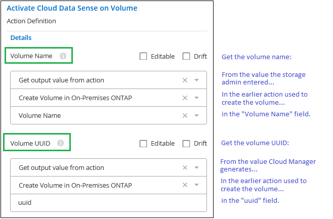
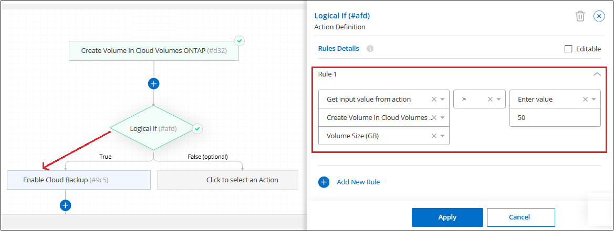

Demander de modifier un document
Demander de modifier un document Modifier sur GitHub
Modifier sur GitHub Guide des contributeurs
Guide des contributeursÉléments de base du modèle
Contributeurs
Certaines fonctions peuvent être utilisées lors de la création d’un modèle qui vous permet de transmettre des valeurs entre les actions (comme un nom de volume), la branche conditionnelle pour connecter des actions ensemble (activer les sauvegardes sur un nouveau volume) et qui aide vos utilisateurs à personnaliser les ressources lors de l’utilisation du modèle.
Commandes spéciales des modèles
Avant de commencer à créer votre modèle, vous devez comprendre certaines options spéciales que vous pouvez définir lors du pré-remplissage d’une valeur pour un paramètre dans un modèle.

Case à cocher modifiable
Cochez cette case pour permettre à l’administrateur du stockage de remplacer la valeur pré-remplie que vous avez saisie dans le modèle. Les administrateurs du stockage peuvent donc déterminer la valeur ajoutée, mais ils peuvent en personnaliser la valeur lors de la création de la ressource.
Lorsque cette option n’est pas cochée, l’utilisateur ne peut pas modifier la valeur et la valeur codée en dur dans le modèle est toujours utilisée lorsque l’administrateur déploie une ressource.
Case à cocher dérive
Cochez cette case pour que BlueXP surveille la valeur codée en dur que vous avez saisie pour un paramètre lorsqu’une ressource est créée avec le modèle. Par la suite, vous pouvez exécuter un rapport de dérive pour voir quels champs configurés avec dérive ne sont plus compatibles avec les paramètres du modèle.
Lorsque cette case n’est pas cochée, l’utilisateur peut remplacer la valeur par n’importe quelle valeur après la création de la ressource.

|
Pour que la fonction de dérive fonctionne, après avoir défini la dérive pour certains paramètres du modèle, vous devez activer la fonction de dérive pour le modèle. Il s’agit de la dernière étape lors de la création d’un modèle. La dérive ne fonctionne pas si elle est activée pour un paramètre mais n’a pas été activée sur le modèle. |
Utilisation d’une expression régulière (regex) dans les champs
Il existe quelques champs dans les modèles qui vous permettent de saisir un regex pour définir la valeur que votre administrateur peut saisir dans le champ, par exemple « Nom du volume » et « Nom de partage ».

Par exemple, si vous entrez « ^[a-ZA-Z][0-9a-ZA-Z_]{0,149}$ » comme regex pour le nom du volume, cela signifie que «_le nom doit commencer par un caractère alphabétique, il ne peut contenir que des chiffres, des lettres ou le trait de soulignement et qu’il doit comporter 150 caractères ou moins. »
Transmettre des valeurs entre les actions de modèle
Les modèles peuvent utiliser les informations d’une action précédente pour remplir un champ dans une action ultérieure. Par exemple, lorsque vous définissez le nom du volume sur lequel la fonctionnalité sauvegarde dans le cloud est activée, vous pouvez demander à l’action sauvegarde d’utiliser la valeur que l’administrateur du stockage a saisie comme nom du volume à partir de l’action Créer une Cloud Volumes ONTAP.
Il existe trois types d’informations que le service AppTemplate peut utiliser :
-
Valeur d’entrée - il s’agit de la valeur réelle que l’administrateur de stockage a saisie dans un champ d’une action de modèle précédente.
-
Valeur de sortie : valeur générée par BlueXP après la création d’une ressource à partir d’une action de modèle précédente.
-
Entrez votre propre valeur - il s’agit d’une valeur que vous saisissez ; elle n’est pas accessible à partir d’une action précédente dans le modèle.
Par exemple, pour activer l’analyse de conformité sur un volume, le service Cloud Data SENSE a besoin à la fois du « nom de volume » saisi par l’administrateur du stockage (valeur d’entrée) et de l’UUID du volume généré par BlueXP lors de la création du volume (valeur de sortie).
L’illustration suivante montre comment saisir ces informations dans la section « Cloud Data Sense » du modèle.

Utilisez des conditions pour effectuer différentes actions basées sur des instructions logiques
Conditions indique au modèle d’exécuter différentes actions selon que la condition est vraie ou fausse lorsque l’administrateur du stockage exécute le modèle. Pour ajouter une condition, sélectionnez l’action Logical If :

Par exemple, vous pouvez indiquer que si un volume a une capacité supérieure à 50 Go, Cloud Backup doit être activé sur ce volume. Si la capacité du volume est inférieure, Cloud Backup n’est pas activé. Vous pouvez implémenter cette fonction dans votre modèle comme indiqué ci-dessous.

Les conditions sont composées de deux parties :
-
Règles - l’élément que vous vérifiez est vrai ou faux.
-
Et/ou instruction - vous permet d’utiliser plusieurs règles pour affiner davantage si des actions supplémentaires sont ajoutées.
Une règle est constituée de trois parties :
Champ Source - l’emplacement à partir duquel vous aurez la valeur à comparer.
-
Obtenir la valeur d’entrée de l’action - valeur réelle que l’administrateur de stockage a saisie dans un champ dans une action de modèle précédente.
-
Obtenir la valeur de sortie à partir de l’action - la valeur BlueXP générée après la création d’une ressource à partir d’une action de modèle précédente.
-
Entrer une valeur - il s’agit d’une valeur que vous saisissez ; elle n’est pas accessible à partir d’une action précédente dans le modèle. Il peut s’agir d’une valeur provenant d’une ressource qui existe déjà, par exemple un volume existant.
Opérateur - l’opérateur utilisé pour la comparaison. Les options sont égal, non égal, supérieur à, inférieur à, supérieur ou égal, inférieur ou égal.
Valeur de champ - la valeur réelle que vous comparez. Les options sont identiques à celles du champ Source.
Une instruction et/ou vous permet d’ajouter de manière conditionnelle d’autres actions pour les utilisateurs lorsqu’ils exécutent le modèle en fonction du fait que plusieurs règles sont évaluées comme vrai ou faux. Et exige que toutes les règles soient vraies ou fausses, et ou ne nécessite qu’une seule des règles soit vraie ou fausse.
Lorsque vous utilisez à la fois une instruction et et ou avec vos règles, le processus d’évaluation suit l’ordre mathématique standard où “ET” précède “OU”. Par exemple :
-
<règle 1> OU <règle 2> ET <règle 3>
Cette instruction est évaluée dans l’ordre suivant : <règle 1> OU (<règle 2> ET <règle 3>)